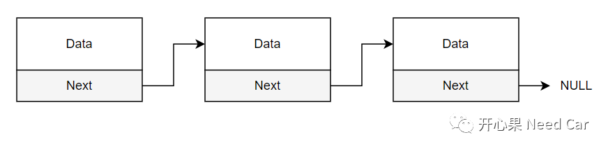
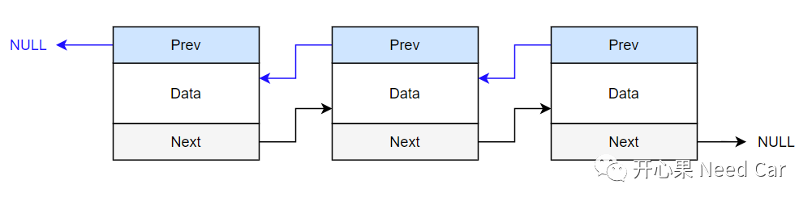
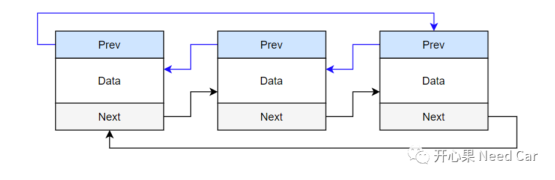
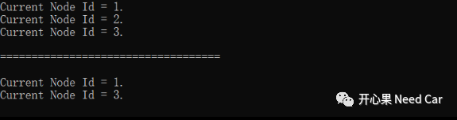

开心果 Need Car · 2023-06-21T15:55:00+08:00 · 微信原文
搞汽车嵌入式开发，读懂代码是基础，如果看到庞杂的代码，行行费解，bug问题也势必个个难解。在C语言中，有这样一种数据结构：链表（Linked List）。精妙复杂的软件架构设计中，大都有它的身影。比如：操作系统中的定时器链表、线程链表、事件链表、CSA处理等等。本文，温故一下链表，以便于在工程问题中，能更好的知新。
1、链表结构
链表有多种形式，单向链表、双向链表、循环链表。链表是一种线性数据存储结构，主要包含两部分：数据、指针变量。其中，指针变量指向相同类型的数据。
以单链表为例，链表的类型声明和别名定义如下：
typedef struct ListNode{/* 数据 */__int16 NodeId;/* 下一个相同数据地址 */struct ListNode* next;}LNode,*LinkList;

eg：Tricore架构，CSA的初始化设计中，常采用此方式。

eg：操作系统中的软件定时器常采用此方式。
循环链表形式如下所示：

2、单链表示例
先感受一下单链表，在思考链表的优势，示例如下：
typedef struct ListNode{/* 数据 */__int16 NodeId;/* 下一个相同数据地址 */struct ListNode* next;}LNode,*LinkList;/* 定义一个空表头 */LinkList Head = NULL;/* 定义3个数据对象 */LNode Obj1, Obj2, Obj3;int main(void){/* 初始化链表 */Head = &Obj1;Obj1.next = &Obj2;Obj2.next = &Obj3;Obj3.next = NULL;/* 对链表数据赋值 */Obj1.NodeId = 0x01;Obj2.NodeId = 0x02;Obj3.NodeId = 0x03;/* 遍历链表，如果非空，继续查找下一个 */LinkList p = Head;while(p){printf("Current Node Id = %d.\n", p->NodeId );p = p->next;}printf("\n===================================\n\n");/* 将Obj2从链表中删除 */Obj1.next = &Obj3;p = Head;while(p){printf("Current Node Id = %d.\n", p->NodeId );p = p->next;}getchar();}

往期精彩回顾